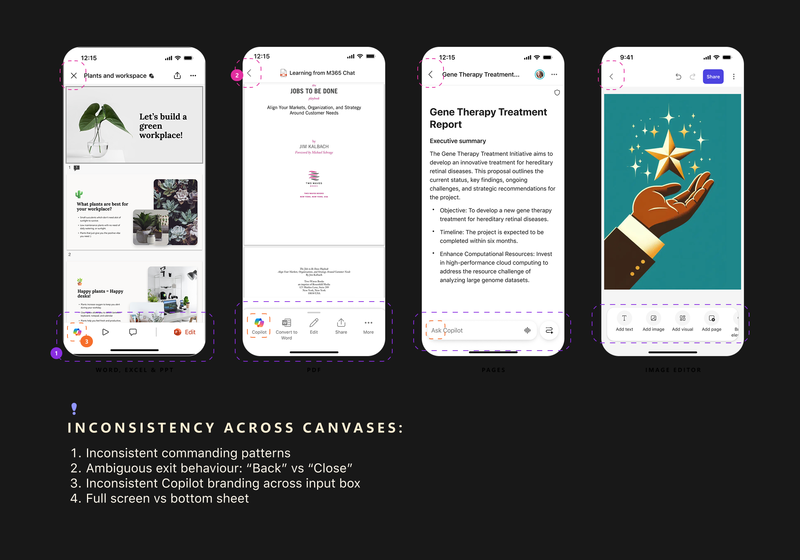
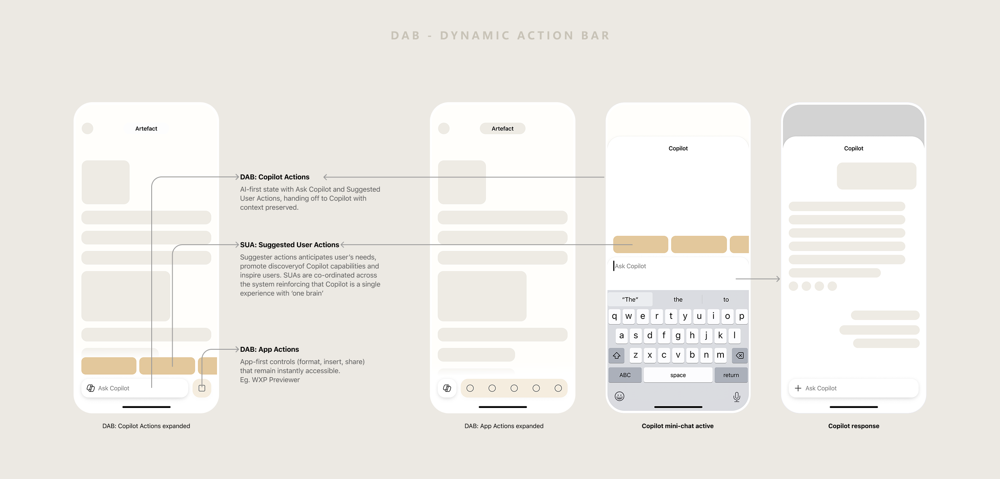
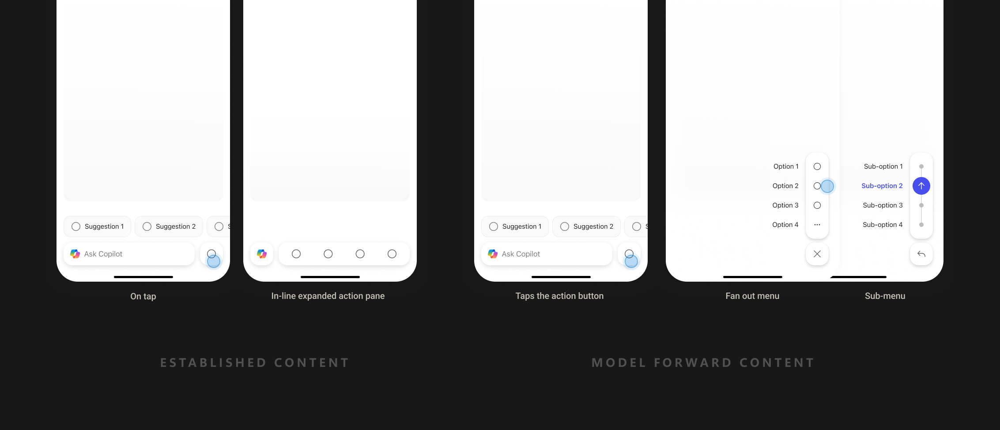
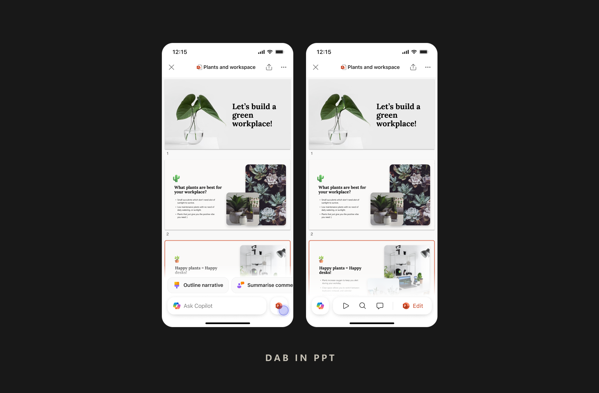
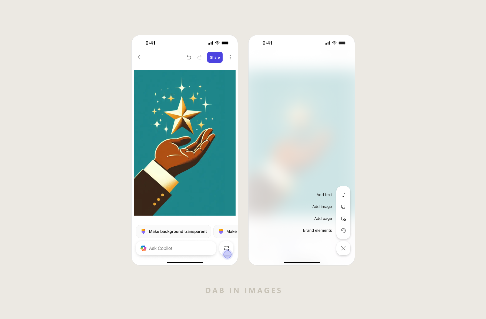

Copilot was buried. Users were consuming documents, not using AI.
On mobile, users open documents frequently — but engaged with Copilot almost never. The older model put Copilot behind a static button or a buried menu entry. The result: low discoverability, low intent expression, and a fragmented experience that felt different across every M365 app.
The previewer surface was a high-traffic, low-AI-engagement paradox. People were looking at their documents but had no natural bridge to AI assistance.
"The question wasn't 'how do we add AI to previewers?' — it was 'how do we make Copilot feel like it was always supposed to be here?'"
A single, consistent Copilot entry point — discoverable and context-aware.
The goal was to evolve Copilot from "a button you tap" to "a dynamic action surface." It had to be:
- Always discoverable — no hunting through menus
- Adaptive to context — different file types, different moments, different needs
- Lightweight enough for mobile's constrained chrome
- Scalable across Word, Excel, PowerPoint, Outlook and beyond
Many surfaces. Zero consistency.


Two kinds of content. One consistent experience.
Not all file types are created equal. DAB needed to work across two fundamentally different content models — each with its own user intent and interaction pattern.
Established
Files created outside of AI — documents, spreadsheets, presentations, PDFs. Users come to read, review, or edit. AI is a layer on top, not the origin.
Word · Excel · PowerPoint · PDF
Model-forward
Content primarily generated and refined by AI — images, Pages, and emerging formats where AI is central to both creation and iteration.
Images · Pages · AI-generated outputs
Evolve Copilot from "a button you tap" to "a dynamic action surface."
This insight led to the Dynamic Action Bar (DAB) — a persistent, adaptive command layer that blends Copilot actions (AI-powered) and App actions (native commands) into a single, always-present bar at the bottom of every previewer.


System thinking over screens.
I focused on creating a system-level solution rather than isolated screens. Every decision was filtered through mobile constraints and the goal of consistency across surfaces.
Consistent placement
DAB anchors to the same spot across every previewer. Predictability is a feature.
Dual action states
Copilot and app actions share one surface — AI actions lead, native actions support.
Context stays intact
Copilot responses open in a half-sheet — users never lose sight of the document.
Designed for small screens
No cluttered toolbars, no disruptive mode switches. DAB stays visible without getting in the way.

A system, not just a component.
- DAB interaction model for Word, Excel and PowerPoint previewers
- Action hierarchy framework for Copilot vs native app commands
- Scrolling behavior and gesture handling inside half-sheet Copilot previews
- Overflow strategy to keep the surface clean when action count exceeds visible space
- Reusable DAB patterns later applied to Outlook and other M365 mobile hubs





DAB in previewer — end to end.
From opening a file to acting on AI output — DAB stays present, useful, and out of the way.
Previewers became Copilot's highest-intent entry point.
The Dynamic Action Bar is now positioned as a scalable, AI-first interaction pattern across M365 mobile apps — the standard for how Copilot surfaces inside document-centric experiences.